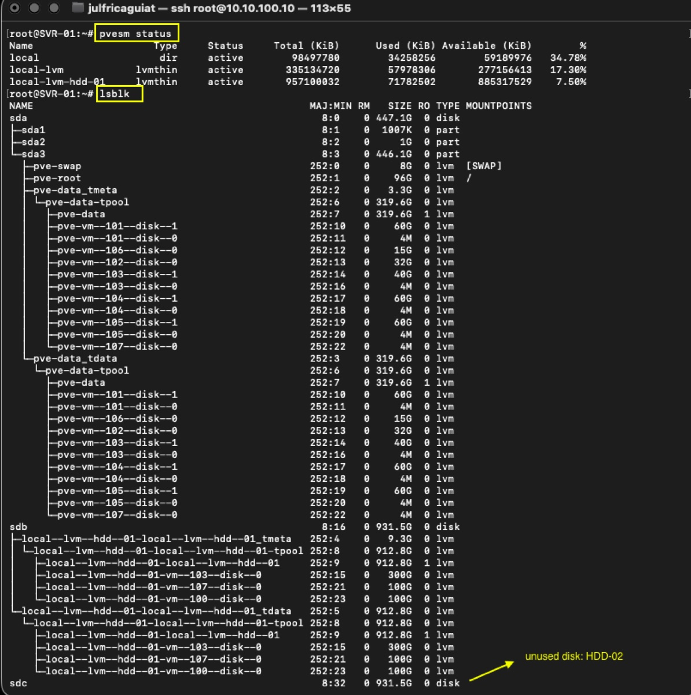
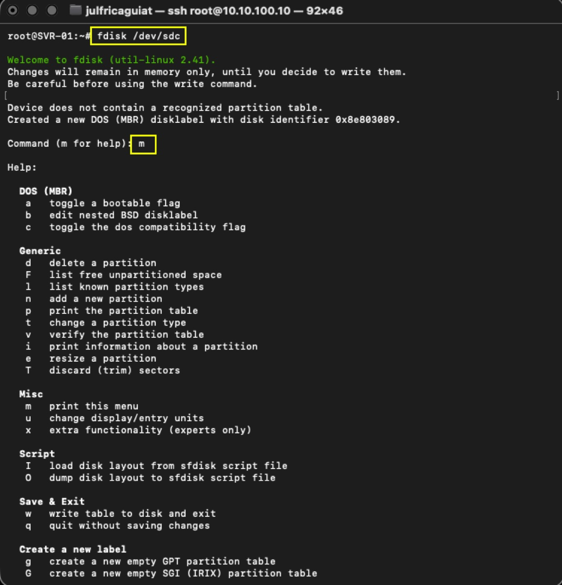
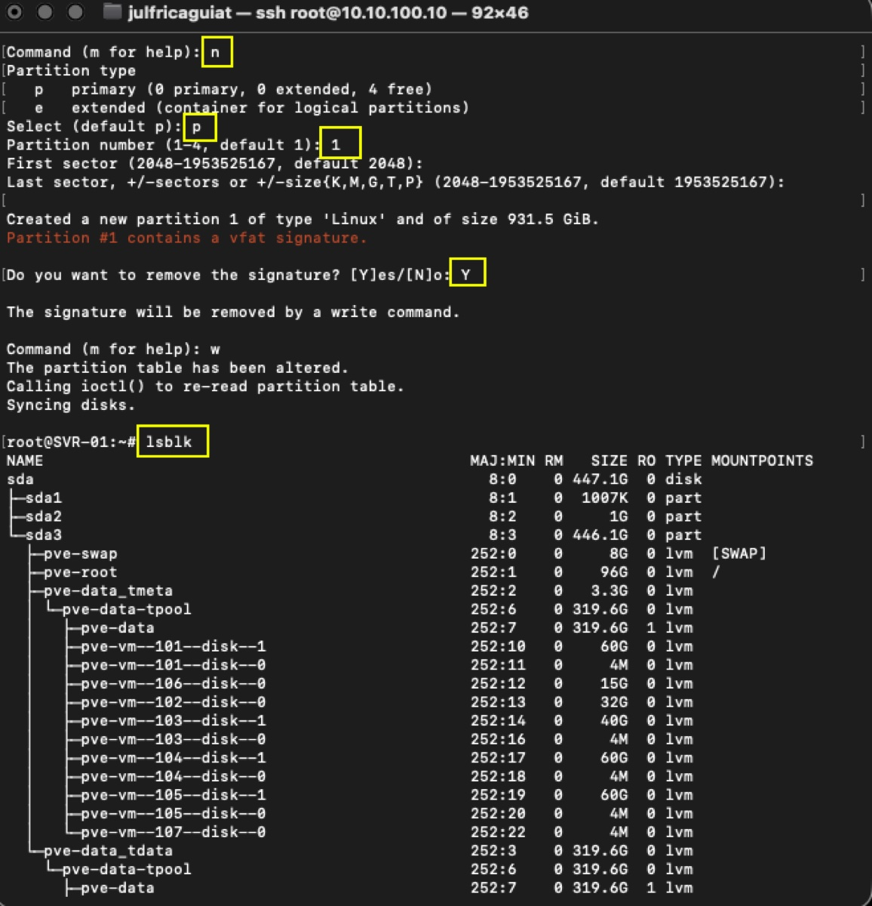
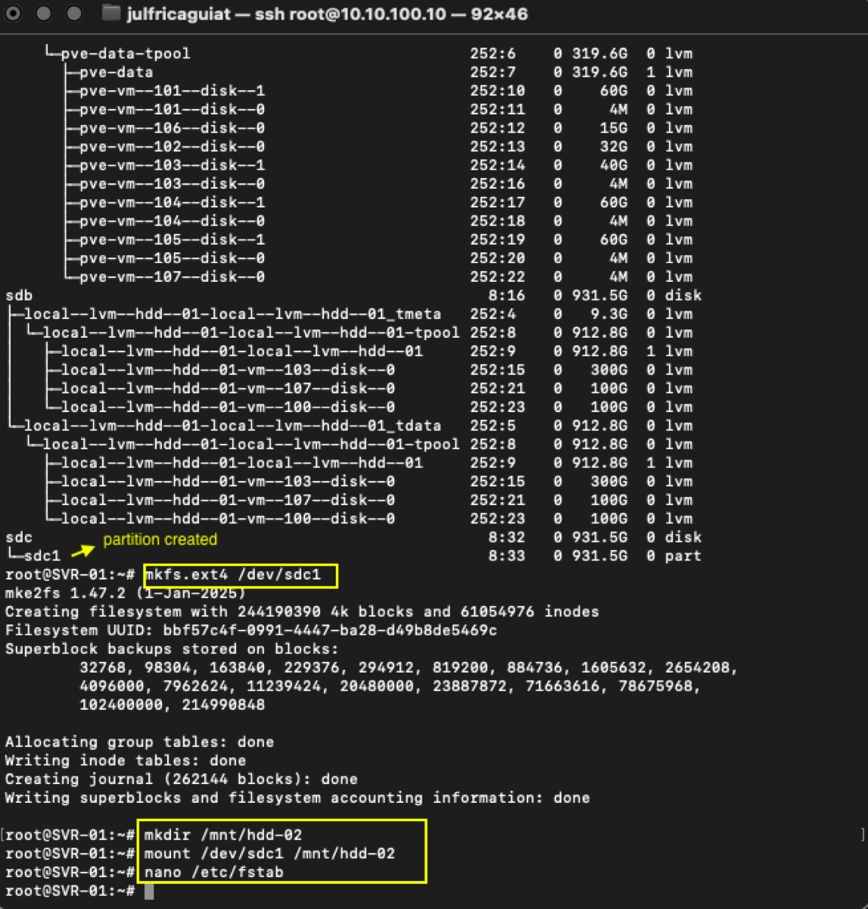
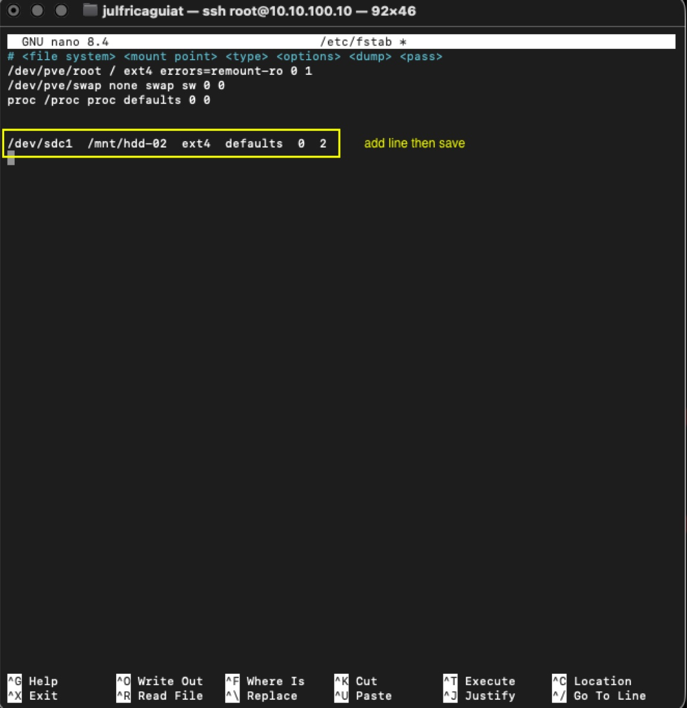
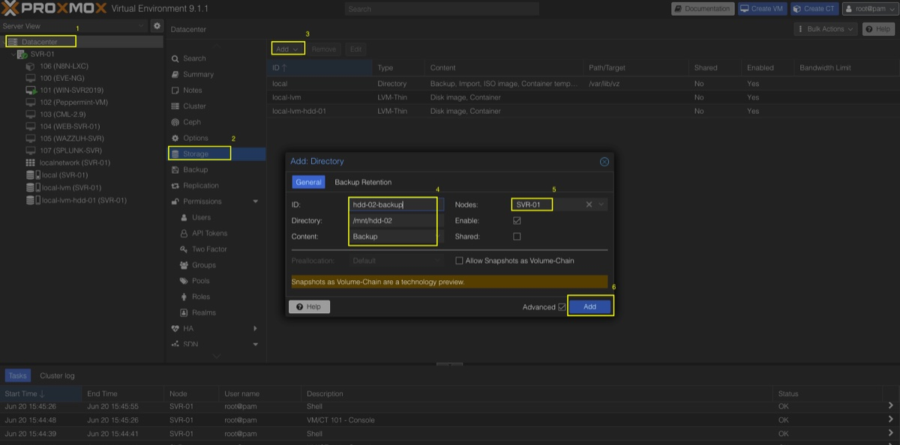
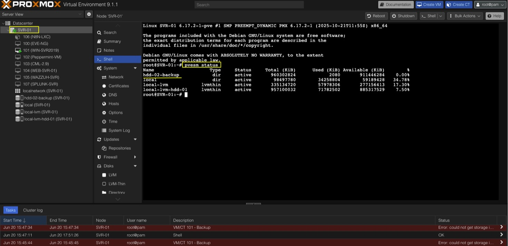

Overview
The JCAG-LAB storage architecture is divided into multiple functional tiers to separate performance workloads, general-purpose VM storage, and backup repositories.
Storage Architecture
| Tier | Storage | Purpose |
|---|---|---|
| Tier 0 | SSD (local-lvm) | Performance-Critical Workloads |
| Tier 1 | HDD-01 (local-lvm-hdd-01) | General Purpose VM Storage |
| Tier 2 | HDD-02 (Directory Storage) | Backup Repository (VZDump) |
| Tier 3 | Future NAS | Centralized Backup Expansion |
Tier 0 — SSD Storage (local-lvm)
High-performance storage reserved for latency-sensitive workloads.
Use Cases
- Windows Server 2019 (AD DS, DNS, DHCP)
- Wazuh SIEM
- Sysmon Telemetry Collection
- n8n Automation Services
- API Services
Tier 1 — HDD Capacity Storage (local-lvm-hdd-01)
General-purpose storage pool used for lab workloads and non-critical virtual machines.
Characteristics
- Large storage capacity
- Thin provisioning enabled
- Lower performance than SSD storage
Tier 2 — Backup Storage (HDD-02)
Dedicated recovery storage used exclusively for backup repositories and restore operations.
Purpose
- Proxmox VZDump backups
- Recovery checkpoints
- Restore testing
- Break/Fix validation
Key Design Rules
- Snapshots are not backups.
- Backups must be stored on Tier 2 storage.
- Tier 0 is reserved for performance-critical workloads.
- Tier 1 may be thin provisioned.
- Tier 2 must remain isolated from VM storage pools.
- Tier 2 must not use LVM-Thin.
Key Design Rules
- Snapshots are not backups.
- Backups must be stored on Tier 2 storage.
- Tier 0 is reserved for performance-critical workloads.
- Tier 1 may be thin provisioned.
- Tier 2 must remain isolated from VM storage pools.
- Tier 2 must not use LVM-Thin.
Step 1 — Identify Available Storage Device
Review existing storage devices.
pvesm status
lsblkIdentify the unused storage device that will become HDD-02. Example:
/dev/sdc
Step 2 — Create Partition
fdisk /dev/sdcCreate a primary partition:
m
n
p
1
ENTER
ENTER
Y
w

Step 3 — Verify Partition
lsblkExpected result:
/dev/sdc1
Step 4 — Format Filesystem
mkfs.ext4 /dev/sdc1
Step 5 — Create Mount Point
mkdir /mnt/hdd-02
Step 6 — Mount Storage and Configure Persistence
mount /dev/sdc1 /mnt/hdd-02Edit fstab:
nano /etc/fstab
Add:
/dev/sdc1 /mnt/hdd-02 ext4 defaults 0 2
Step 7 — Add Storage to Proxmox
Navigate to:
Datacenter → Storage → Add → Directory| Parameter | Value |
|---|---|
| ID | hdd-02-backup |
| Directory | /mnt/hdd-02 |
| Content | Backup |
| Nodes | SVR-01 |

Step 8 — Verify Storage
pvesm statusExpected result:
- Storage appears as active
- hdd-02-backup is available

Final Storage Layout
Tier 0 → SSD Storage (local-lvm)
Tier 1 → HDD-01 (local-lvm-hdd-01)
Tier 2 → HDD-02 Backup Storage
(hdd-02-backup)
Tier 3 → Future NAS ExpansionSummary
HDD-02 has been deployed as dedicated backup storage within the JCAG-LAB Proxmox environment. The storage architecture now separates production workloads, general-purpose virtual machines, and recovery repositories into independent tiers, improving operational resilience and recovery readiness.